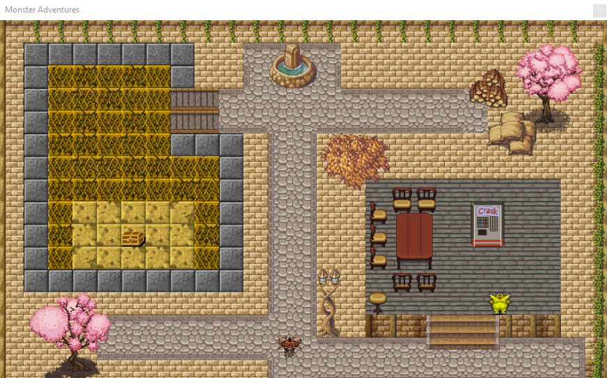
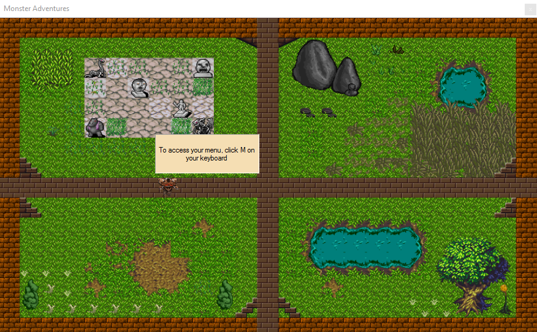
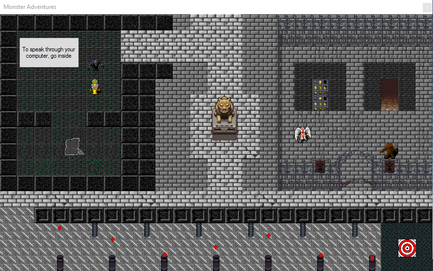
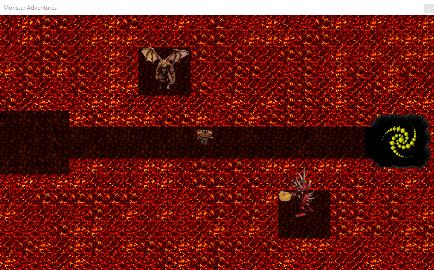
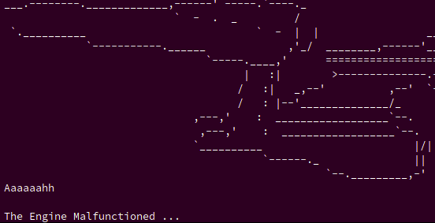

Personal Projects
Employee Clock in
Built a device improving an employer's time spent to track an employee's time worked using a finger print sensor replacing the old pen and paper method.
Supreme Chat
Developed an Android messenger app with a team of seven members executing the SCRUM agile software development system.

Monster Adventures
Constructed a Visual Basic adventure game where the player explores world and fights monsters. The project was presented to the Board of Trustees at Copper Mountain College.




Command Recall
Designed a C++ program that teaches user to learn the windows command prompt thoough a text based interactive game.
